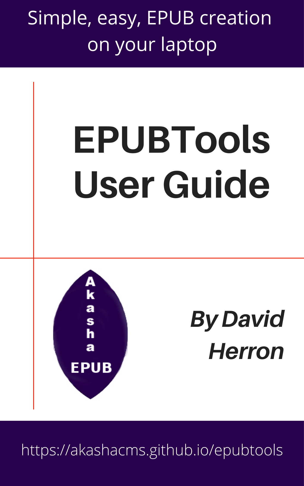

|  |
EPUBTools User GuideBy David Herron |
To use EPUBTools requires three things:
epubtoolsIn this section we'll talk about the first two steps.
Node.js is a platform for running JavaScript applications on macOS, Windows, Linux, and several other operating systems. It allows one to run JavaScript code outside of web browsers, and therefore free's JavaScript from being dismissed as just a browser language. A long list of developer tools, application frameworks, and more, are available for the Node.js platform.
The installation process varies from one platform to another, depending on whether there is a package manager and certain details about its use. That is, one method for installing Node.js is to go to the download page (https://nodejs.org/en/download/) and download the installer for your operating system. But it is better to use a package management system if only to simplify updating it when a new release is issued.
For modern versions of Windows, run this command:
PS C:\...> winget search nodejs
PS C:\...> winget install OpenJS.NodeJS.LTS
The first command shows you the available packages, and the second installs the current LTS version of Node.js.
For macOS using MacPorts, run these commands:
$ sudo port search nodejs
$ sudo port install nodejsNN
The first command shows you the available packages, for example nodejs14 or nodejs16. For the second command, substitute for NN the version number you desire. As of this writing, nodejs16 is the latest production version, and development on nodejs17 has just begun.
For macOS using HomeBrew, run these commands:
$ brew search nodejs
$ brew install node@NN
The first command shows you the available packages. For HomeBrew, the naming convention is to use @NN to specify the version number.
The Node.js website has instructions for many more operating systems at: https://nodejs.org/en/download/package-manager/
Once you've installed Node.js, you can verify it by running these commands:
$ node --version
$ node --help
They print out useful information, and act to verify that Node.js is installed and running.
The primary function of EPUBTools is bundling an EPUB from a directory containing files prepared to the EPUB3 spec. That means an EPUBTools project is related to such a directory. In typical use you'll have another tool with which to build the files to be bundled into the EPUB.
To get familiarized with EPUBTools, let's go for a quick win. Namely, in the akashacms/epubtools we have pre-built files with which we can generate an EPUB. The plan is to build a simple project directory, copy those files into that directory, and create a simple build script.
The W3C's EPUB3 Community Group is now shepherding EPUB standards development. One of their tools is a GitHub repository containing EPUB3 samples: https://github.com/IDPF/epub3-samples The pre-built files used in this example come from that repository. Hence, we have a directory containing the files for an EPUB, plus an EPUBTools configuration file, at: https://github.com/akashacms/epubtools/tree/master/test/samples-3.0 Our plan is to create a project directory with a simple build script to build this EPUB.
First, clone the EPUBTools repository into a work directory:
$ git clone https://github.com/akashacms/epubtools
You'll find the sample mentioned above in epubtools/test/samples-3.0. In this directory is epub30-spec, which is a directory containing the files pertaining to the EPUB v4 specification, and epub30-spec.epubtools, which is a configuration file to use with EPUBTools.
Next create a directory and do initial setup:
$ mkdir epub3-spec
$ cd epub3-spec
$ npm init -y
$ npm install epubtools npm-run-all --save
$ cp -r ../epubtools/test/samples-3.0/epub30-spec .
$ cp -r ../epubtools/test/samples-3.0/epub30-spec.epubtools .
This sets up a project directory with a package.json file. This file is used by Node.js primarily to record project dependencies. We installed two packages, recording them in this file. Another primary purpose we have is to record a build procedure.
Edit the package.json and change the scripts section to this:
"scripts": {
"build": "npm-run-all build:*",
"build:mkmeta": "epubtools mkmeta epub30-spec.epubtools",
"build:bundle": "epubtools package epub30-spec.epubtools"
},
This is our build procedure. There are two commands, epubtools mkmeta to build the EPUB3 metadata files, and epubtools package to construct the EPUB file.
The epub30-spec.epubtools describes where to find the files, and various particulars to use in the EPUB. It is written in YAML format, that describes the particulars of this project. We'll go over this file in more detail later.
Next, run this:
$ npm run build
> epub3-spec@1.0.0 build
> npm-run-all build:*
> epub3-spec@1.0.0 build:mkmeta
> epubtools mkmeta epub30-spec.epubtools
> epub3-spec@1.0.0 build:bundle
> epubtools package epub30-spec.epubtools
This runs both steps of the build procedure. There should be no errors or other messages, and you should end up with a file named epub30-spec.epub.
If you have an EPUB3 reader application, you can now use that to open this file. One suitable application is Adobe Digital Editions.
Another test you can run is this:
$ unzip -l epub30-spec.epub
Archive: epub30-spec.epub
Length Date Time Name
--------- ---------- ----- ----
20 11-23-2021 01:43 mimetype
312 11-23-2021 01:43 META-INF/container.xml
2383 11-23-2021 01:43 EPUB/package.opf
61573 11-23-2021 01:43 toc.ncx
13001 11-23-2021 01:43 EPUB/css/epub-spec.css
134445 11-23-2021 01:43 EPUB/img/epub_logo_color.jpg
19659 11-23-2021 01:43 EPUB/img/idpflogo_web_125.jpg
56587 11-23-2021 01:43 EPUB/xhtml/epub30-acknowledgements.xhtml
43915 11-23-2021 01:43 EPUB/xhtml/epub30-changes.xhtml
199590 11-23-2021 01:43 EPUB/xhtml/epub30-contentdocs.xhtml
103527 11-23-2021 01:43 EPUB/xhtml/epub30-mediaoverlays.xhtml
37945 11-23-2021 01:43 EPUB/xhtml/epub30-nav.xhtml
84779 11-23-2021 01:43 EPUB/xhtml/epub30-ocf.xhtml
55966 11-23-2021 01:43 EPUB/xhtml/epub30-overview.xhtml
214636 11-23-2021 01:43 EPUB/xhtml/epub30-publications.xhtml
27100 11-23-2021 01:43 EPUB/xhtml/epub30-references.xhtml
17505 11-23-2021 01:43 EPUB/xhtml/epub30-terminology.xhtml
998 11-23-2021 01:43 EPUB/xhtml/epub30-titlepage.xhtml
--------- -------
1073941 18 files
An EPUB is simply a ZIP file containing XHTML, CSS and image files, plus a few metadata files. The file toc.ncx contains a Table of Contents and other data, and is a hold-over from EPUB v2. The package.opf file contains a manifest of the files, and some other data. The epub30-nav.xhtml contains the HTML version of the table of contents. The other .xhtml files are the content of this book.